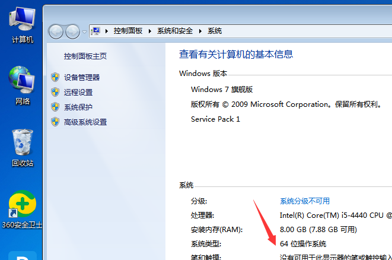
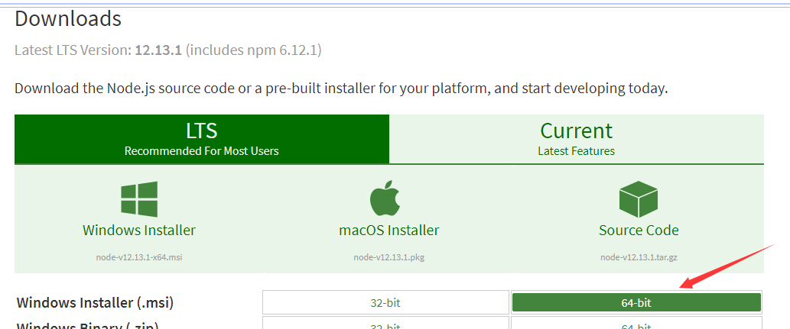
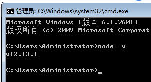
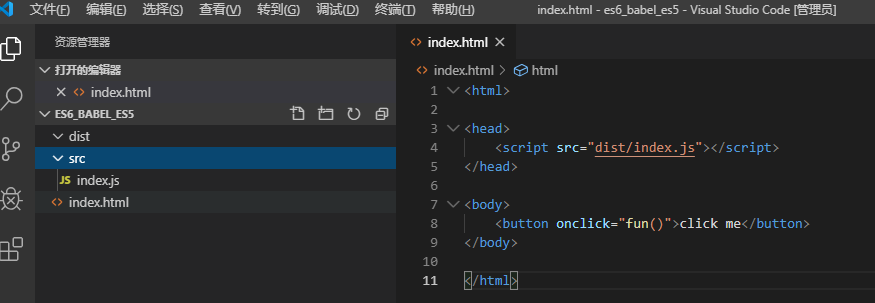
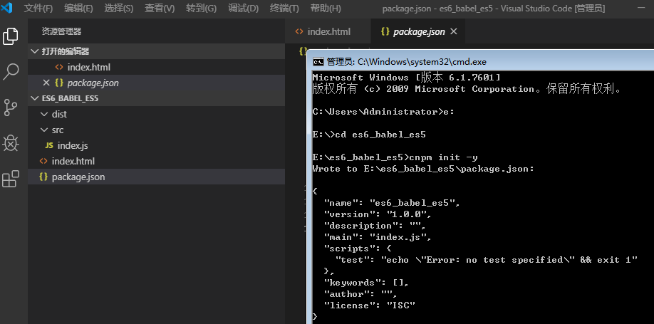
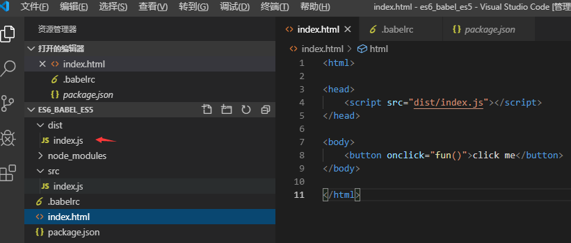
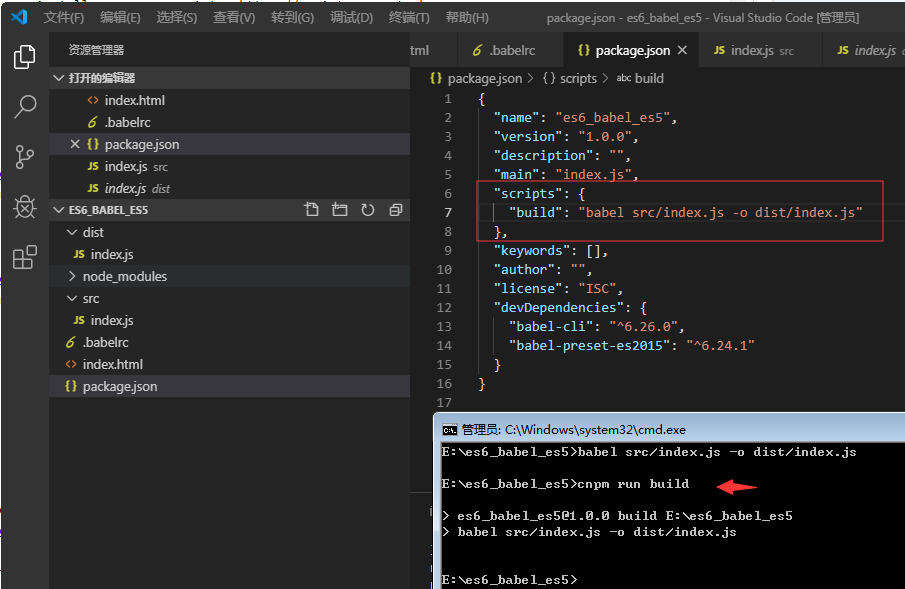

本人近期接到一个天大的“好消息”：zxbc项目某些客户为保险业等种种原因要支持IE……
2013年，ES6草案冻结，2015年6月，ES6正式通过，成为国际标准。都9102啦，Chrome还好啦，升级到最新版本，大部分ES6还是ok的，但是万恶之源IE呢？作为一个前端开发者，兼容万恶的IE，顿时，胸中万马奔腾，此处省略十万字……
无奈之举，撸起袖子开干呗。js先用babel搞个ES6转ES5呗。
1、计算机-右键-属性-系统类型（我的64位操作系统）

2、下载node
下载地址：https://nodejs.org/en/download/

找到自己系统对应的32或64位的msi文件下载后安装即可。
安装完成后win+r后输入cmd终端执行命令：
node -v

看到版本号即为安装成功。
建议使用淘宝镜像，个人感觉快点，执行命令
npm install -g cnpm --registry=https://registry.npm.taobao.org
安装完成后，执行
npm -v
看到版本号即为安装成功
1、建立工程目录
src:ES6语法编写的JS文件目录地址；
dist:使用Babel转换成ES5的文件目录地址，在项目引用这个文件夹里边的JS文件

2、终端进入项目目录后执行命令
cnpm init -y
-y是指表示全部默认，不用一直敲回车

看到有自动生成的package.json就ok了
全局安装Babel-cli
终端执行命令：
cnpm install -g babel-cli
终端执行命令：
cnpm install --save-dev babel-preset-es2015 babel-cli
{ "presets": [ "es2015" ], "plugins": [] }
若用右键新建文件后修改重命名提示：必须键入文件名，此时可用编辑器新建此文件即可
babel src/index.js -o dist/index.js


之后，修改js文件后终端执行命令即可
cnpm run build
这只是js单文件的转换，多文件的转换下次在补上……
共勉，望鞭策！